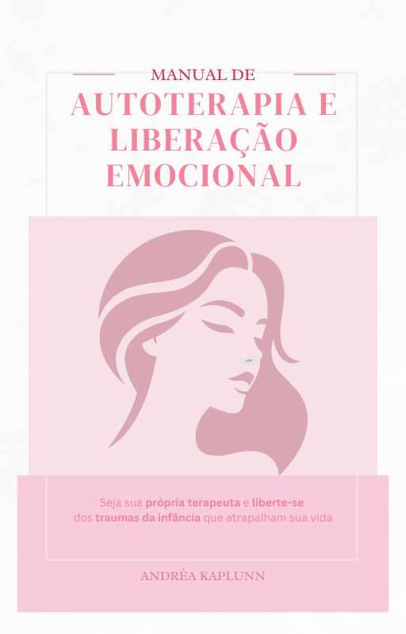

Um guia prático com 12 atividades terapêuticas para reconhecer seus padrões emocionais e reescrever sua história — no seu tempo, no seu ritmo.

Veja por dentro: páginas reais do manual que você vai receber.
Você acorda cansada de si mesma.
Não é preguiça e também não é frescura. É o peso de carregar reações que você não escolheu ter. Aquela sensação de que você já sabe o que precisa mudar, mas mesmo assim não consegue. Por mais que você tente, acaba voltando para a mesma dor.
Você já tentou mudar no impulso, na força de vontade. Já tentou esquecer, já falou para si mesma que dessa vez seria diferente.
Mas o padrão volta. Sempre volta.
E a pergunta que ninguém te ensinou a fazer é: de onde isso veio?
O problema não é você não querer mudar.
O problema é que ninguém te mostrou de onde veio...
Enquanto você não entender a raiz, vai continuar interpretando o silêncio do outro como rejeição. Vai continuar se diminuindo antes que alguém faça isso por você. Vai continuar achando que amor vem com condição.
A ciência do comportamento humano mostra que a forma como fomos acolhidas na infância cria padrões que carregamos para a vida adulta. Esses padrões têm nome, têm características específicas. E quando você aprende a reconhecê-los em você mesma, algo muda.
Não de um dia para o outro, mas de verdade.
É exatamente esse o trabalho que esse manual propõe — sem jargão, sem promessa de milagre. Com exercícios reais, que pedem que você sente, escreva, sinta e ressignifique.
É autoterapia de verdade.
PDF com 40 páginas · Andréa Kaplunn · acesso imediato
TERAPEUTA INTEGRATIVA · MENTORA DE MULHERES
Desde 2018, Andréa guia e inspira mulheres a resgatarem sua força interior. Trabalha especialmente com mulheres que chegaram aos 50 anos e buscam redescobrir quem são e o que faz sentido para elas nesta fase da vida.
Combina abordagens da psicologia positiva, neurociência, Neurolinguística e terapias energéticas para criar um trabalho que une ciência e sensibilidade.
↗ @andreakaplunnAdquiri mais confiança e aprendi a escolher o que me faz bem, sem me preocupar se estou agradando ou não os outros. Isso me trouxe paz e harmonia para o meu dia a dia.
— R.
A gente tem o grande erro de querer complicar tudo, e não precisa, porque tudo tem jeito. A dor pode ser inevitável, mas o sofrimento é opcional.
— M.A.
Os exercícios são excelentes! Gratidão pela oportunidade de reflexão e de me tornar alguém melhor e mais leve.
— L.
Estou adorando. Ótimo trabalho!
— E.
Relatos de participantes de jornadas conduzidas por Andréa Kaplunn.
"Não tenho tempo para me dedicar a isso."
O manual foi feito para o seu ritmo. Você pode fazer uma atividade por semana, uma por dia, ou voltar sempre que quiser. Não tem prazo, não tem cobrança. É seu.
"Já tentei terapia antes e não funcionou."
Esse manual não substitui a terapia — ele complementa. Para muitas mulheres, é o primeiro passo para entender o que levar para uma sessão, ou para começar a jornada antes de estar pronta para um acompanhamento.
"Tenho medo de mexer com coisas dolorosas sozinha."
O manual foi construído com muito cuidado para conduzir você de forma gradual e acolhedora. Cada atividade convida à gentileza consigo mesma — nunca à exposição sem suporte.
"R$ 27 é pouco, será que é raso?"
São 40 páginas de conteúdo baseado na Teoria do Apego e em anos de prática clínica. O preço baixo é uma escolha intencional da Andréa: tornar esse trabalho acessível para o maior número de mulheres possível.
De R$ 97,00
R$27
pagamento único · acesso vitalício
7
dias de garantia
Você tem 7 dias a partir da compra para testar o manual. Se por qualquer razão sentir que não era o que esperava, é só solicitar o reembolso direto pela plataforma.
Sem perguntas. Sem julgamento.
A única coisa que você arrisca é descobrir que era exatamente o que você precisava.
Como recebo o manual depois que compro?
Imediatamente após o pagamento você recebe um e-mail com o link para download. O acesso também fica disponível na sua conta da Eduzz.
O manual funciona no celular?
Sim. É um PDF que abre em qualquer dispositivo — celular, tablet ou computador. Você também pode imprimir se preferir trabalhar no papel.
Preciso ter algum conhecimento de psicologia?
Não. O manual foi escrito para qualquer mulher, independente de formação. Todos os conceitos são explicados de forma clara e acessível.
Quem é Andréa Kaplunn?
Andréa é Terapeuta Integrativa e Mentora de Mulheres desde 2018. Trabalha com mulheres que chegaram aos 50 anos e buscam redescobrir quem são e o que faz sentido para elas nesta fase da vida, combinando psicologia positiva, neurociência, Neurolinguística e terapias energéticas. Acompanhe: @andreakaplunn
Como funciona a garantia?
Você tem 7 dias a partir da data da compra para solicitar o reembolso, diretamente pela plataforma Eduzz. Sem burocracia e sem precisar justificar.
O manual está aqui, esperando pelo momento em que você decidir que merece entender o que acontece dentro de você — e fazer algo diferente com isso.
Quero o manual agora — R$ 27 Acesso imediato · garantia de 7 dias · compra segura